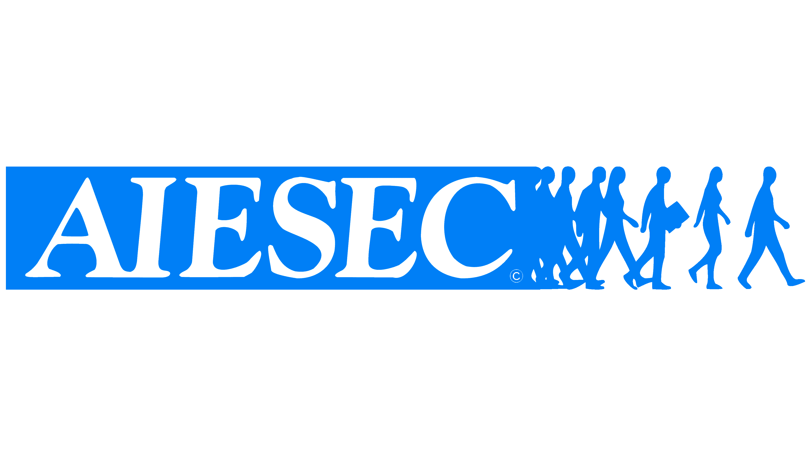
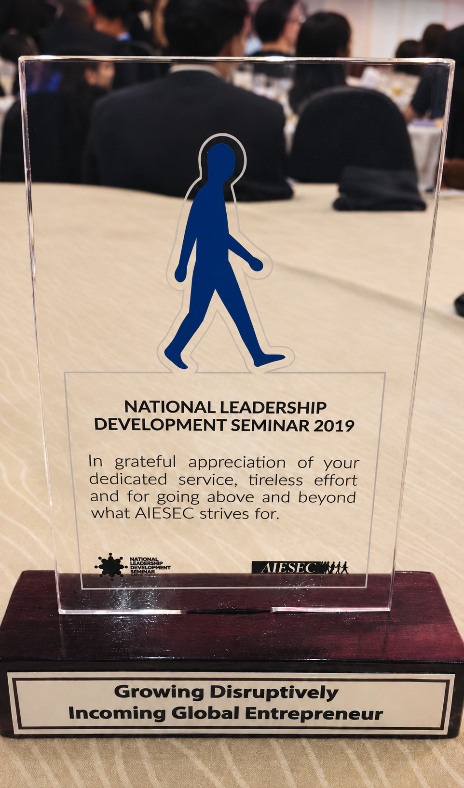
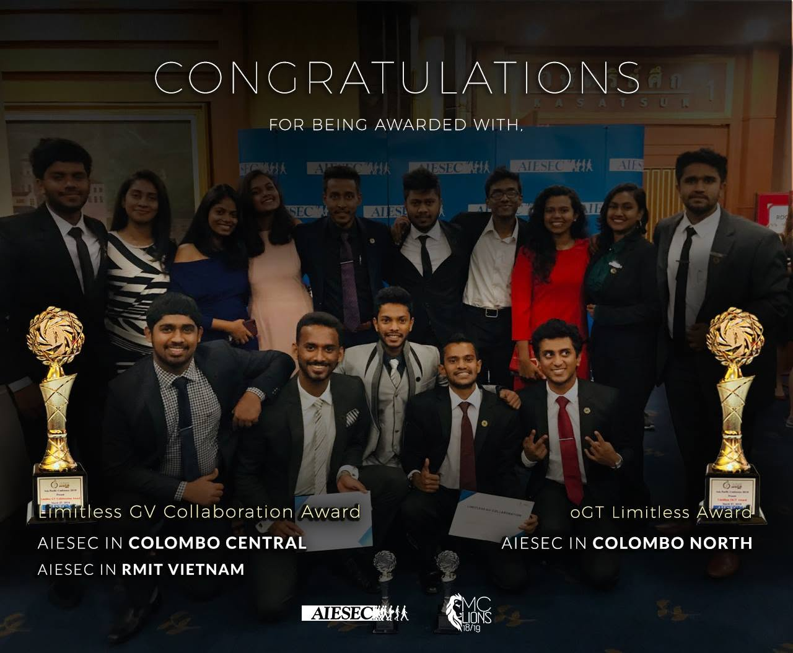
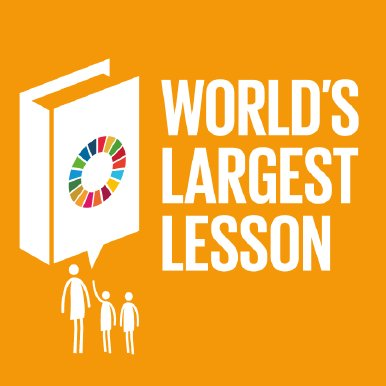

Programming & analysis
Build research experiments, analyze data, and automate system workflows.
Technical methods, engineering tools, and experience representing and leading communities.
Build research experiments, analyze data, and automate system workflows.
Benchmark multimodal models and study inference routing, model performance, and cost.
Model coupled systems and evaluate control strategies for energy, air quality, and resource allocation.
Build and operate container platforms across public cloud and on-premises environments.
Automate infrastructure provisioning and application releases through CI/CD and GitOps.
Monitor systems, investigate failures, and work with scheduling and performance in large-scale computing.
Graduate student representation
Rensselaer Polytechnic Institute
International youth leadership
AIESEC in Sri Lanka

AIESEC is a global, youth-led organization that develops leadership through international exchanges, internships, and volunteering.

Under my leadership, our team won the “Growing Disruptively” award for Incoming Global Entrepreneur (iGE) at the 2019 National Leadership Development Seminar.

Represented AIESEC in Sri Lanka at the Asia Pacific Conference in Bangkok, connecting with fellow youth leaders from across the region.
Global goals education
Youth participation & SDG awareness

World’s Largest Lesson is an education programme from Project Everyone, working with UNICEF and UNESCO to bring the United Nations Sustainable Development Goals into learning.
Represented and participated in World’s Largest Lesson activities, supporting youth engagement and awareness of the UN Sustainable Development Goals.